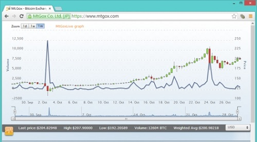

也紀念我們永遠的朋友 李士傑先生（Shih-Chieh Ilya Li）。
Bitcoin 的危與機
◎本文原載 Linux Pilot，原文章連結按此。
開源貨幣 Bitcoin 由小眾的玩意，一躍而成全球化電子貨幣，但危機也隨之而起。利用 Bitcoin 作為貨幣交易的毒品買賣網站 Silk Road，在 2013 年 10 月被美國聯邦調查局 (FBI) 查封，令 Bitcoin 兌換美元的匯率大跌，成為 Bitcoin 在面世以來的最大考驗。

粗略估計，單是用於支付 Silk Road 交易的手續費的 Bitcoin，已達八千萬美元，總交易金額達到 12 億美元。查封消息一出，Bitcoin 兌換美元的匯率一度由原來的 1 BTC 兌換 145 美元跌至 119 美元，但在本文截稿時已經達 188 美元了，反映 Bitcoin 安全渡過了作為「貨幣最大考驗」的信心危機。筆者在 2012 年 12 月時也曾在網誌中提及 Bitcoin，當時 1 BTC 只能兌換 13 美元，如果在那時候入貨的話，現在已經升值超過十倍了。
貨幣最重要是備受信任，當年美元能成為戰後全球的通用貨幣，理由亦是如此。美國在當年曾承諾每一美元都可以兌換等值的黃金，這也是「美金」一詞的由來。其後金本位雖被取消，但各國已經手持大量美元，只能眼睜睜的看著美國無止境地印鈔票，手頭上的美元不斷貶值。不管是沒錢還國債、還是出現外貿逆差，都可以通過印刷美鈔來解決，並透過美元在金球的流通性，將通貨膨脹等負面經濟效果轉嫁給其他國家。戰後美國雖經歷數十年的高額財政赤字、甚至觸及債務上限仍然能保持經濟穩定，原因就在這裡。
你印的鈔票大家都在用，那麼印多少我們總可以發表一點意見吧？對不起，這是美國的「家事」，怎可以讓你來管？ Bitcoin 就不同，生成（開採）貨幣的方法由公開的數式決定，任何人都可以下載一個開源的 Linux、Mac OS X 或 Windows 的程式進行「採礦」。系統會根據「礦工」的人數，自動調整可以開採的 Bitcoin 「礦脈」的數量，確保 Bitcoin 的稀有性，情況和開採黃金一樣，不必受任何個人、團體或國家的控制，價格由市場供求決定。Bitcoin 採用了 P2P 的分散式設計，每一台電腦都以匿名方式保留著部分交易記錄，縱使一部分的用戶不在線上，也可以重新計算出所有交易記錄，不需要由中央銀行作任何形式的干預。
Bitcoin 的出現對美元絕對是個威脅，美國自然不會坐視不理。但諷刺的是要管制 Bitcoin，就必須承認它是貨幣，否則所有限制貨幣的手段都會變得「出師無名」。在 Wiki 上 Bitcoin 原本被形容為加密貨幣 (Cryptocurrency)，但隨著 2013 年 8 月美國德州聯邦法院裁定 Bitcoin 是貨幣，今後它將會受到和美元同等的管制。可幸的是美國政府始終未能像控制美元般限制 Bitcoin 的發行量，開源的「採礦」設計保證了 Bitcoin 的未來。
Bitcoin 另一個好處是操作簡便，傳統跨國的銀行轉帳，縱使是同一銀行間的轉帳也必須經過第三者，令轉帳前永遠無法確認手續費金額。Bitcoin 則相對簡單，只要將轉帳內容以數位簽章加密送出，對方便可馬上收到。Internet Archive、WordPress、WikiLeaks 已經接受 Bitcoin 付款，部分企業甚至開始用 Bitcoin 發薪。Bitcoin 提供的是一個讓人類首次打破美元壟斷局面、在經濟上真正自立的機會，關鍵只在我們是否能夠把握。
您也許有興趣閱讀以下文章:
- Bithub 透過 Bitcoin 來實質嘉惠開放源碼專案的貢獻者！ - 2014-01-28
專欄總覽


E-Mail：contact@openfoundry.org Address：台北市南港區研究院路2段128號 中央研究院資訊科學研究所 . 隱私權條款. 使用條款